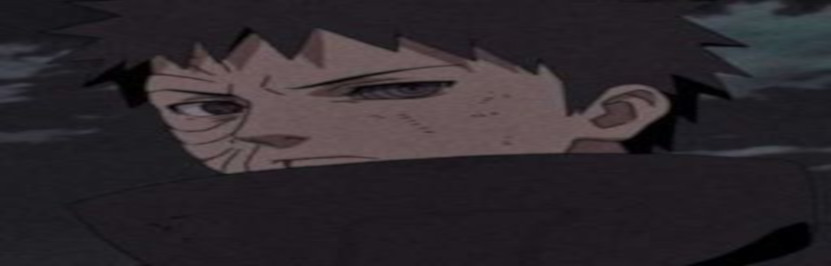
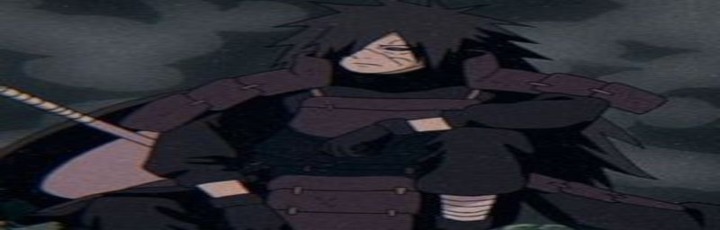
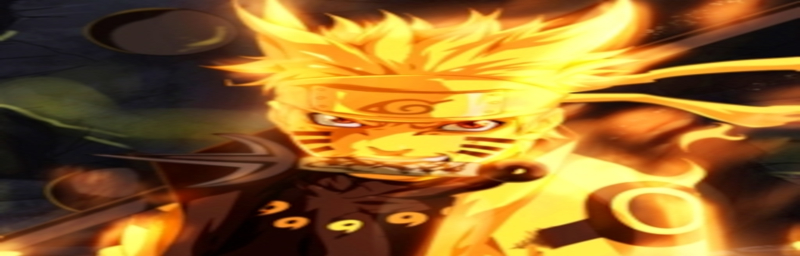
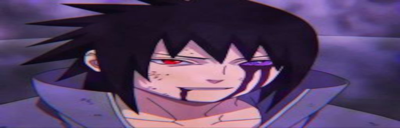

1- Obito Uchiha
Obito Uchiha (Uchiha Obito) foi um membro do clã Uchiha de Konohagakure. Acreditava-se que ele tinha morrido durante a Terceira Guerra Mundial Shinobi, com seu único legado sobrevivente sendo o Sharingan que ele deu ao seu companheiro de equipe, Kakashi Hatake. Na verdade, Obito foi salvo da morte e treinado por Madara Uchiha, mas os acontecimentos da guerra deixaram Obito desiludido com o mundo, e ele tentou substituí-lo por um novo. Madara Uchiha fez Obito Uchiha ser seu sucessor, lhe dando o Plano Olho da Lua. Usando o pseudônimo de Tobi (Tobi) e "Madara Uchiha", Obito manipulou a Akatsuki das sombras para dar continuidade aos seus planos, eventualmente, indo a público com eles e, no processo, iniciando a Quarta Guerra Mundial Shinobi. Durante a guerra, Obito teve uma mudança no coração, porém, ele acabou sacrificando sua vida para ajudar a salvar o mundo.
2- Madara Uchiha
Madara Uchiha (Uchiha Madara) foi o lendário líder do clã Uchiha durante a Era dos Estados Combatentes e um dos principais antagonistas da série. Ele fundou Konohagakure ao lado de seu rival, Hashirama Senju, com a intenção de iniciar uma era de paz. Eventualmente, quando os dois não concordaram quanto ao meio para alcançar a paz, eles lutaram pelo controle da aldeia em um combate histórico, que terminou com a morte de Madara. Contudo, Madara burlou sua própria morte e se escondeu, estendendo sua própria vida para trabalhar em seus planos para acabar com os conflitos mundiais. Incapaz de conclui-los em vida, Madara confiou seu conhecimento e planos a Obito Uchiha, pouco antes de morrer. Anos mais tarde, Madara foi reanimado e depois devidamente ressuscitado durante a Quarta Guerra Mundial Ninja. No entanto, os planos de Madara são definitivamente frustrados pelos esforços das Forças Aliadas Shinobi, e à beira de seus últimos momentos, ele percebe os erros de seu caminho e ateia as pazes com Hashirama antes de sua verdadeira e definitiva morte.
3- Naruto Uzumaki
Naruto Uzumaki (うずまきナルト Uzumaki Naruto?) é um personagem fictício da franquia de mangá e anime Naruto, criada por Masashi Kishimoto. Servindo como o protagonista homônimo da série, ele é um jovem ninja da vila fictícia de Konohagakure (Vila Oculta da Folha). Os aldeões de sua vila o desprezavam por causa da Raposa de Nove Caudas (uma criatura malévola que atacou Konohagakure) que foi selada em seu corpo. Apesar disso, ele aspira se tornar o líder de sua aldeia, o Hokage, a fim de receber sua aprovação. Sua personalidade despreocupada, extrovertida, hiperativa, otimista e brincalhona permite que ele faça amizade com outros ninjas de Konohagakure, bem como com ninjas de outras aldeias. Naruto aparece nos filmes da série e em outras mídias relacionadas à franquia, incluindo jogos eletrônicos e animações de vídeo originais (OVA), bem como a sequência Boruto: Naruto Next Generations de Ukyo Kodachi, onde ele é o Hokage e seu filho, Boruto, é o protagonista, enquanto seu outro filho, Kawaki, é o deuteragonista.
4- Sasuke Uchiha
Sasuke Uchiha (うちはサスケ, Uchiha Sasuke) é um dos últimos membros sobreviventes do clã Uchiha de Konohagakure, além de ser a reencarnação atual de Indra. Ele se tornou um shinobi para que pudesse algum dia ficar forte o suficiente para se vingar contra o seu irmão mais velho, Itachi, que tinha massacrado todo o seu clã. Inicialmente, um membro do Time Kakashi de Konoha, Sasuke desertou da aldeia para obter poder com Orochimaru, e mais tarde também se juntou a Akatsuki, tornando-se um criminoso internacional no processo. Mais tarde, ele se torna uma peça fundamental para acabar com a Quarta Guerra Mundial Ninja, até ser finalmente redimido por seu rival, e também melhor amigo, Naruto Uzumaki. Sasuke decide voltar para Konoha, dedicando a sua vida para ajudar a proteger a vila e seus habitantes.
5- Itachi Uchiha
Itachi Uchiha (うちはイタチ, Uchiha Itachi) foi um prodígio do clã Uchiha de Konohagakure. Ele se tornou um criminoso internacional depois de assassinar seu clã inteiro, poupando apenas a vida de seu irmão mais novo, Sasuke. Ele se juntou a organização criminosa Akatsuki, onde ele entrou em frequentes conflitos com Konoha e seus ninjas, incluindo Sasuke, que procurou vingar sua família. Depois de morrer durante uma batalha contra Sasuke, as motivações de Itachi foram reveladas serem mais complicadas do que pareciam, uma vez que seu clã tramava um golpe de estado contra Konoha que traria guerra à aldeia. No fim, Itachi desejava proteger a sua vila e seu irmão, permanecendo um shinobi leal a Konohagakure até o fim.